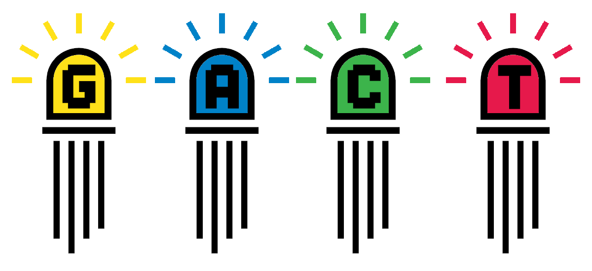

Illumina Quality Control
2023-06-19

Chapter 1 Introduction

This practical session aims to introduce you to Illumina Quality Control. The topics covered are:
- Logging in to our teaching environment
- Acquiring the workshop data
- Quality control of good quality genomic data
- Quality control of poor quality genomic data
- Quality control of Whole genome shotgun data
- Quality control of 16S rRNA metagenetic data

This work is licensed under a Creative Commons Attribution-NonCommercial-ShareAlike 4.0 International License.